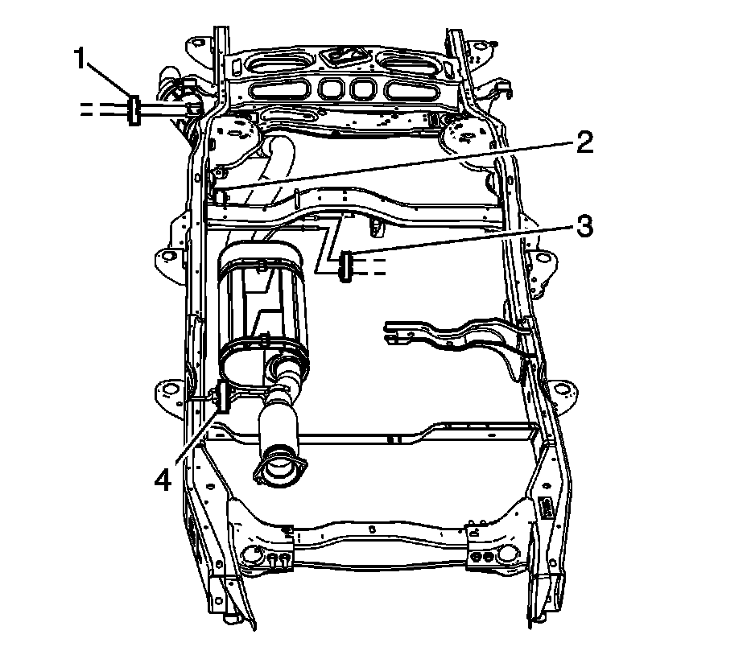

Exhaust Muffler Insulator, Hanger, and Bracket Replacement (1500 - w/RPO L92)
Exhaust Muffler Insulator, Hanger, and Bracket Replacement (1500 - w/RPO L92)
Removal Procedure
Caution: Refer to Exhaust Service Caution.
Caution: Refer to Protective Goggles and Glove Caution.
Important:
^ Service the exhaust system insulators individually in order to retain the support for the exhaust system.
^ Do not use oil base lubricants.

1. Raise and support the vehicle. Refer to Lifting and Jacking the Vehicle.
2. Spray lubricant if necessary, onto the exhaust system insulator holes where the frame hanger and the exhaust hanger are inserted.
3. Remove the exhaust system insulator (1 or 3), as required.
4. If replacing the exhaust system insulator (2 or 4), remove the exhaust muffler assembly.
5. Spray lubricant if necessary, onto the exhaust system insulator hole where the frame hanger is inserted.
6. Remove the exhaust system insulator (2 or 4) from the frame hanger, as required.
Installation Procedure
1. Spray lubricant if necessary, onto the exhaust system insulator hole where the frame hanger will be inserted.
2. Install the exhaust system insulator (2 or 4) to the frame hanger, as required.
3. If the exhaust system insulator (2 or 4) was replaced, install the exhaust muffler assembly.
4. Spray lubricant if necessary, onto the exhaust system insulator holes where the frame hanger and the exhaust hanger will be inserted.
5. Install the exhaust system insulator (1 or 3), as required.
6. Lower the vehicle.